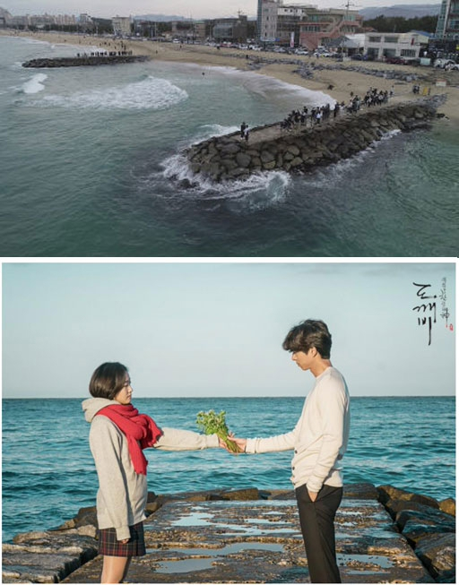

주문진에서 북쪽으로 1.5km 떨어져 있는 강릉 최북단의 해변이다.주문리와 향호리에 걸쳐 있기 때문에 주문리쪽 해변을 주문해변, 향호리쪽 해변을 향호해변이라고 부르기도 한다. 백사장 규모는 길이 700m, 면적 90,000㎡이다. 경사가 완만하며 수심이 얕고 바닷물이 맑아 한여름 많은 휴양객이 찾는 곳이다.
향호호수가 옆에 있어 사철 담수어 낚시도 할 수 있고, 해변 뒤에 있는 6,600㎡의 울창한 소나무숲에는 공원으로 조성되어 있으며 야영이 가능한 곳도 있다. 주차장 앞에는 오토캠핑장과 어린이 놀이시설이 있어 해마다 관광객이 늘고 있다.
주변에는 주문진 리조트가 있고, 강원도 교직원 수련원이 있다. 인근에 주문진항·우암진항·오리진항이 있어 신선한 해산물을 판매하는 곳도 있다.
이밖에도 인근 남쪽에는 오죽헌·시립박물관·선교장·경포대·참소리박물관·정동진·장덕리은행나무·삼산리소나무·소금강·연곡해수욕장·하조대해수욕장 등 관광지가 많이 있다. 교통은 7번 국도가 남북으로 지난다.